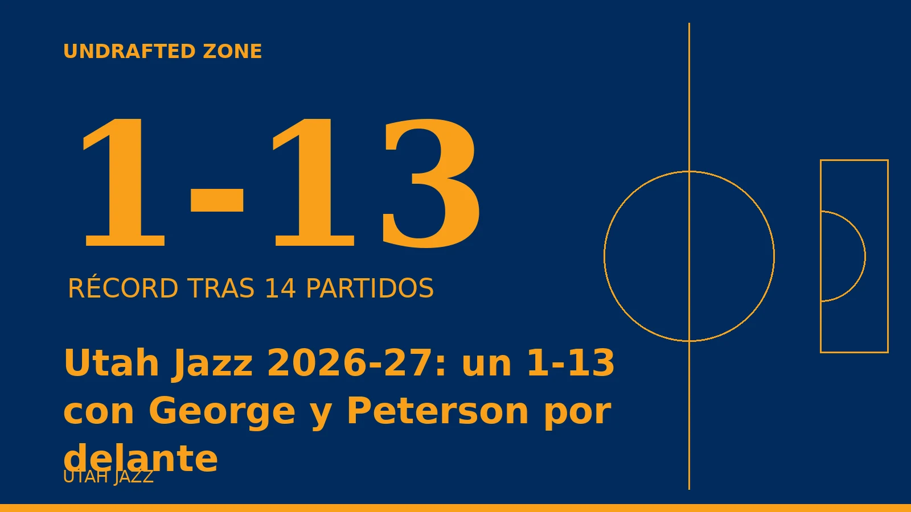

Utah Jazz 2026-27: un 1-13 con George y Peterson por delante
Utah Jazz abre 2026-27 con un 1-13 y doce derrotas seguidas. George y Peterson sostienen el ataque, pero la defensa, con 118 puntos recibidos, es el problema.

Utah Jazz llega a mitad de noviembre con un 1-13, último del Oeste y con doce derrotas seguidas desde la única victoria de la temporada, ante New Orleans el 24 de octubre. Con datos de ESPN y la verificación de Basketball-Reference, la pregunta de esta guía no es si el equipo va a salir de ese agujero, sino cuánto de lo que se ve es falta de piezas y cuánto es un problema de fondo. Creo que hay de las dos cosas, y que la defensa es el dato que más preocupa.
Un 1-13 que se explica con la defensa
Los Jazz anotan 107’1 puntos por partido y reciben 118’0, un saldo de -10’9 por noche. Es la cifra que más dice sobre el equipo: no se trata de un ataque que se atasca en partidos cerrados, sino de un equipo que pierde casi siempre por márgenes amplios.
Las derrotas más recientes lo confirman. El 11 de noviembre cayeron ante Orlando por 108-123, el 13 perdieron en Houston por 118-125 y el 15 cayeron en casa ante San Antonio por 102-110. Las diferencias fueron de 15, 7 y 8 puntos. La más ajustada fue la de Houston, pero incluso en esa el equipo recibió 125 puntos, y eso dice más que el marcador final.
George y Peterson sostienen el ataque
Keyonte George es la referencia ofensiva. Juega los trece partidos que ha disputado como titular, promedia 20’3 puntos y 6’6 asistencias en 32’7 minutos, con un 42’2% en tiros de campo y un 31’3% en triples. Su volumen es el que más pesa en la plantilla, y su reparto de asistencias marca el ritmo del equipo cuando intenta correr.
El problema de George es el mismo que el de cualquier base que carga el balón: el porcentaje todavía no acompaña al volumen. Con 3’6 pérdidas por partido, además, cada posesión que controla es también una oportunidad para el rival, y en un equipo que concede 118 puntos, esas pérdidas se pagan caras.
Darryn Peterson es el otro gran punto de apoyo. Empieza los catorce partidos, juega 31’4 minutos y aporta 17’1 puntos y 3’8 asistencias, con un 40’5% en tiros de campo y un 35’6% en triples. Ese porcentaje exterior le da al equipo una amenaza real desde la distancia, algo que con Markkanen fuera se echa de menos.
Markkanen, la baja que más pesa
Lauri Markkanen era la pieza que más cambiaba el equipo cuando estaba en pista. En ocho partidos promedió 18’0 puntos y 6’8 rebotes en 30’9 minutos, con 3’6 triples anotados por noche al 39’7%. Su ausencia llegó el 11 de noviembre, cuando le diagnosticaron una fractura no desplazada en la mano derecha. Según la página de lesiones consultada, estará fuera al menos un mes, así que el equipo tendrá que sostenerse sin su principal anotador de ala durante el primer tramo de su calendario.
Jackson Jr., Hayes y Nurkic: el poste sin profundidad
Jaren Jackson Jr. jugó cuatro partidos antes de lesionarse la rodilla derecha con una rotura del ligamento colateral medial, según la página de lesiones. Su baja de seis a ocho semanas, contadas desde el 27 de octubre, sitúa su posible regreso entre el 8 y el 22 de diciembre. Mientras tanto, la defensa del poste ha dependido de Jaxson Hayes, que promedia 8’8 puntos y 6’0 rebotes en doce partidos, con diez titularidades y un 64’1% en tiros de campo.
Hayes figura como baja para el partido de esta noche contra los Clippers por una lesión de rodilla, así que la rotación interior tendrá que apoyarse en Mo Bamba y Tony Bradley. Bamba es el más útil de los dos: juega 19’5 minutos, promedia 9’3 puntos y 5’8 rebotes, con 1’8 tapones por noche. Bradley, con 2’0 puntos en siete partidos, todavía no tiene un papel claro.
Nurkic también aparece en la lista de bajas, por una lesión en el pie derecho que sufrió en un partido de pretemporada. Según la misma página, se volverá a valorar en dos semanas, y en las estadísticas consultadas no aparece con minutos esta temporada. Su regreso sería una pieza más para un poste que todavía no tiene un eje.
Bailey, Sensabaugh y Collier: la rotación de perímetro
Ace Bailey es el ala titular de referencia sin Markkanen. Empieza trece partidos, juega 31’2 minutos y promedia 13’4 puntos y 6’4 rebotes, con un 46’7% en tiros de campo y un 26’8% en triples. Su eficiencia exterior es el punto débil de su juego, y el equipo necesita que mejore si quiere que la ausencia de Markkanen se note menos en el marcador.
Brice Sensabaugh sale desde el banquillo y aporta 8’4 puntos en 16’8 minutos, con un 35’8% en triples. Es un tirador de rotación que da a la segunda unidad un punto de anotación cuando los titulares descansan. Isaiah Collier, que no empieza ninguno de sus trece partidos, suma 6’8 puntos y 4’2 asistencias en 16 minutos, con un 37’5% en triples. Su papel de base de rotación se verá sobre todo cuando George descanse.
Josh Okogie y Svi Mykhailiuk completan el perímetro de rotación con números modestos: Okogie promedia 4’5 puntos y 3’4 rebotes en 19’3 minutos, y Mykhailiuk 3’5 puntos en 15’8 minutos, con un 25’0% en triples. Ninguno de los dos cambia un partido por sí solo, y esa es la pregunta que el equipo tiene que responder en las próximas semanas: si el banquillo puede mantener el nivel defensivo cuando entra.
Un calendario que empieza en Los Ángeles
Los siete partidos siguientes marcan el tono de la temporada de los Jazz. Esta noche juegan en Los Ángeles contra los Clippers y el miércoles 18 se miden a los Lakers en la misma ciudad. Después reciben a Phoenix el viernes 20 y a Dallas el domingo 22, antes de volver a enfrentarse a los Lakers el lunes 23, esta vez en su pabellón. El tramo se cierra con Denver el viernes 27 y Phoenix de nuevo el domingo 29.
Son tres partidos fuera y cuatro en casa, y los siete son contra rivales del Oeste. Es un calendario que permite medir al equipo sin que el marcador sea un castigo inmediato: si Utah compite en Los Ángeles y gana alguno de los partidos en casa, la lectura del 1-13 cambia bastante.
Qué significa un arranque así
Un 1-13 tiene dos lecturas, y la diferencia entre ambas se decide en el marcador de cada partido. La primera es la de la transición: una plantilla que cambia de piezas, un ala de rotación en obras y un poste sin profundidad. La segunda es la del problema estructural: un equipo que concede 118 puntos por partido no tiene un plan defensivo que funcione, y eso no lo arregla una baja de regreso.
Creo que las dos lecturas son ciertas, pero que la defensa pesa más. Los Jazz no pierden solo porque no anoten: pierden sobre todo porque no paran al rival. Si Markkanen y Jackson Jr. vuelven en diciembre y el equipo sigue recibiendo 118 puntos, el problema seguirá siendo el mismo, con mejores piezas en el papel. Esa es la trampa de este arranque: las bajas explican parte de los números, pero no todos.
Para entender cómo se llegó a esta plantilla, nuestro repaso de la agencia libre de los Jazz sirve de punto de partida. Y el margen con el que la franquicia puede construir alrededor de sus jóvenes depende en buena parte del tope salarial, la luxury tax y los aprons, que condicionan cuánto se puede rotar sin salir del marco económico.
Qué mirar en las próximas semanas
Hay tres preguntas que decidirán la temporada de Utah. La primera es si la defensa mejora sin Markkanen ni Jackson Jr. Si el equipo sigue recibiendo más de 115 puntos en los próximos partidos, el problema será estructural. La segunda es si George mantiene su volumen sin que sus pérdidas, que ya están en 3’6 por partido, se disparen. La tercera es cuánto aporta Peterson cuando el equipo tenga que sostener partidos cerrados sin apoyo de ala.
Con catorce partidos, cualquier conclusión es provisional. Esta pieza se actualizará cuando cambien las cifras y el estado de las bajas, y el aviso de «Actualizado» indicará la fecha. Lo que sí está claro es que la plantilla tiene piezas para competir, pero todavía no ha encontrado el plan que las junte en la pista.
Preguntas frecuentes
¿Cuál es el balance de los Jazz en 2026-27?
Una victoria y trece derrotas tras catorce partidos, último del Oeste.
¿Quién es el máximo anotador del equipo?
Keyonte George, con 20’3 puntos por partido.
¿Quién reparte más asistencias?
Keyonte George, con 6’6 por partido. Isaiah Collier promedia 4’2 en trece partidos.
¿Cuándo es el próximo partido?
El martes 17 de noviembre, a domicilio contra los Clippers.
¿Por qué no aparecen salarios?
Porque esta pieza se centra en la rotación y el rendimiento, y no hay cifras salariales que se puedan contrastar con la misma solidez que las estadísticas. Para entender cómo encajan los contratos en el tope, nuestra guía sobre el tope salarial, la luxury tax y los aprons es el punto de partida.